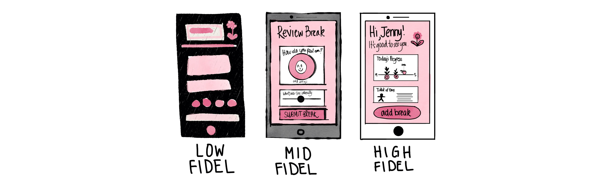
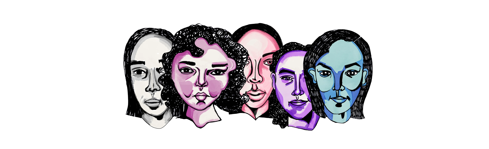
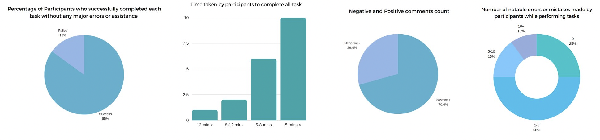
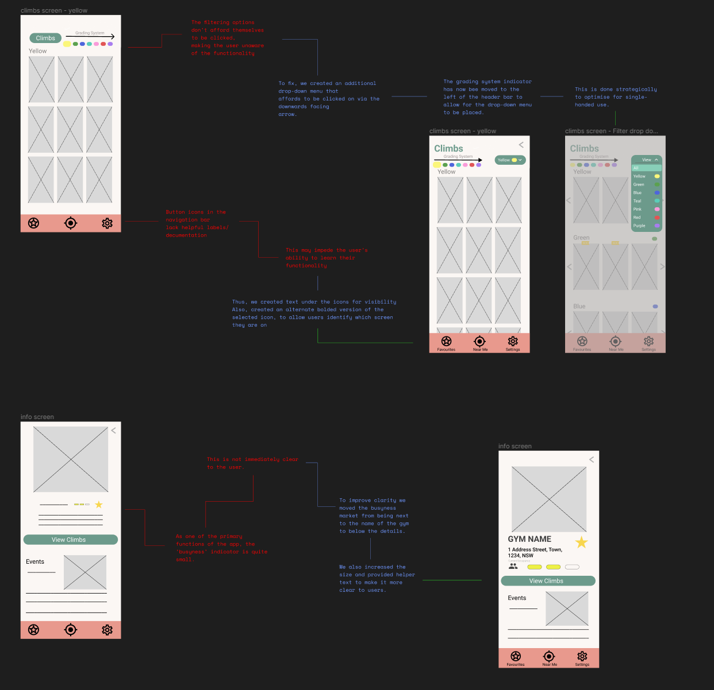
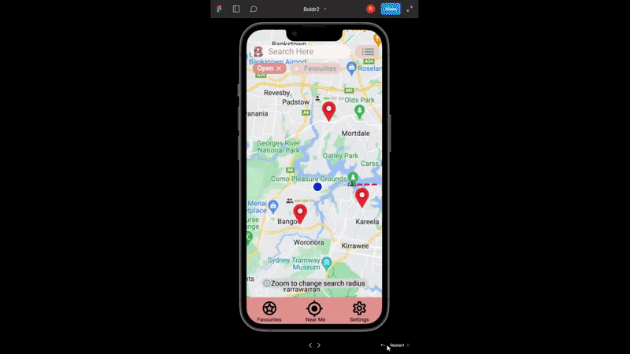
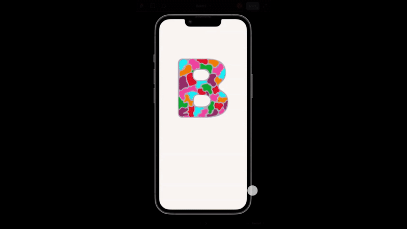
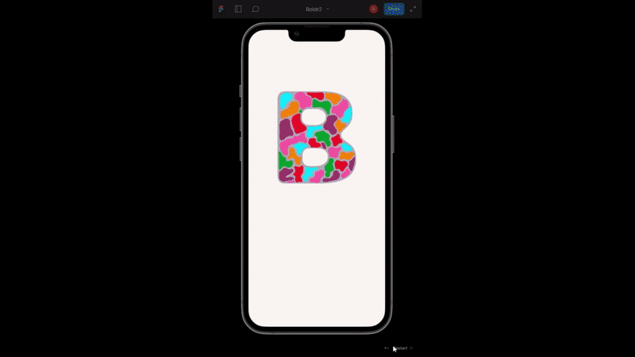
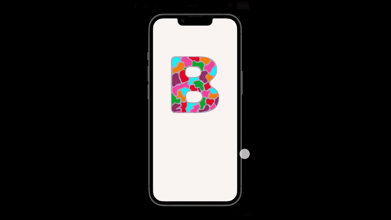

In 2023, I developed a mobile app alongside three hard working group members to explore the novelty of bouldering
and how their gym owners are able to showcase their busy-ness and various climbs in real-time.

I. PROBLEM DEFINITION
We wanted to dive deep into the core issues on what current boulderers have issues on and how to enhance their overall experience.
The Questionnaire
Through group synthesis, we identified for a user-centric design we found that the issues that were needed to be solved, are best to be done according to the climbers involved.
In this way we are able to correct the things that are needed and also able to save time and money if the project went to full-scale.
To ensure that we kept our work to a professional standard, we looked at how researchers were able to extract information whilst being ethical and most importantly being able to have their subject at ease. Therefore,
- All of our research and test participants were asked for consent
- We focused on letting context-aware participants know that the interview was strictly for climbers/boulders
- Gave contacts the freedom of place, time and method to make them feel at ease
View Questionnaire
The Questionnaire Results
Up until this point during the project, we had listed potential features for the application, but had not chosen
which ones to go ahead. Upon the questionnaire we were hoping to narrow down the features so that the app is user-centric.
Through the questionnaire we used a weighting system to analyze the results. Participants who go bouldering regularly were given a higher priority than those who only go occasionally. This is because regular boulderers are the main target audience for our application, they would use it the most often.
View Questionnaire Result Summary
The Features
All 15 of the participants said that they don't currently use a bouldering app. This reinforced to us that there is currently a gap in the market, indicating a clear opportunity for our application.
Thus, we chose our features based on the results of the questionnaire. We decided to scrap 5 of our features and only implement the 3 main features which our users care about:
- A gym locator with ‘busyness’ indication (i.e., how busy the gym is).
- A platform to keep up to date on upcoming events, new climbs, open/close times of gyms, etc.
- A climbing route database that includes relevant grading systems
We'd originally thought that some of the other features would be more important, but by focusing on the users we were able to choose the features leading to the greatest overall success of our application.

II. PROTOTYPING PHASE
Prototyping allowed our team to make monumental leaps between low and high fidelity, incorporating wireframing as a key tool for development.
Requirements
Based off the updated information we gathered from the questionnaire, we had now decided the requirements needed for the app.
This included both functional and unfunctional requirements that will serve the base and how the user-driven features will work through user flow.
Consequently, we felt confident and keen to create our prototype through back and forth communication for initial user testing. By doing so, we had several meetups as a group to allows us to identify and address issues at low costs,
and avoids sticking with weak ideas for too long or ideas too complex.
Link to Requirements List
Through our pilot test, we found that there were a multitude of issues regarding the prototype's utility and usability. as expected. The problem was that we had thought of the entire solution mentally but did not translate the concept well enough through our first prototype. This led to us rushing through the iterating process because we felt as though we had a viable solution.
Informed by our pilot test, accurately and reliably obtaining feedback is crucical to the development of our mid fidelity prototype.
Therefore, the development of a prototype testing protocol was to ensure that results were kept consistent, that it would not be skewed by asking varying questions - or that the varying results resulted from different user experiences rather than a communication error.
The Initial Prototype
By ticking off our functional and non-functional requirements we were able to create a mock-up of our application so that participating users were able to test and see if it is a viable application to varying bouldering gym-goers.
Hence, using Figma, we were able to collaborate and create wireframes based off our feedback/suggestions. One person (myself) lead the overall design aesthetic, so that the design was more consistent.

III. User Testing
Using our usability test plan, we identified pain and delight points to inform prototyping phases.
We wanted our product to improve immensely between each iteration so that we can meet the needs of boulderers.
I found that the best way to justify our design changes to potential stakeholders would be to visualise our changes based on the opinions of climbers.
Therefore, we strengthened the connection between previous feedback and our next prototype, giving us confidence that changes we make will result in a better experience.
The Testing
As a group, we were able to design a task list for the users to test ensuring that we were able to gain insight for a comprehensive usability report.
We implemented both a pre-test and post-test questionnaire for the participants to gather both performance and behaviour measures of the user and the application first, and from record the participants had an
easy time going through the process.
View Pre-test and Post-test Questionnaire
The Results
As the primary objective of the test was to thoroughly evaluate the app’s usability, we aim to gather a high count of participants so that any potential obstacles or challenges the user may encounter, we were able to gain a lot of feedback and insight. Within the test, we all facilitated 5 different members each, adding up to 20 participants overall.
Given the scale usability questionnaire we had some overall positive results in an early prototype.
- Percentage of participants to successfully complete the task was quite favoured
- Time take for all task was averaged to be about 7 minutes, which was ideal in our predictions
- Some fair share of positive and negative comments
- And not many notable errors when performing tasks

IV. QUANTITATIVE DIFFERENCES
Our quantitative results show the drastic improvement made to our user interface by listening to participants and designing accordingly.
To Resolve
Although this prototype had positive statistics overall, there were still some issues that needed to be resolved from the comments from some participating users.
Compared to our mid fidelity testing, it can be seen that we still had some consistent negative comments on certain design principles and heuristics, in which we changed effectively and efficiently.

V. FINAL PRODUCT
The Solution
By having the opportunity to prioritise users and their needs, our product, Boldr, provides an environment
for fellow boulderers to access information directly and grants a community engagement for the overall
sport in their local area.
To enhance the bouldering experience, the app helps users to plan their visits effectively,
ensuring they are aware of the operating hours and the climbs they can attempt. This can lead to a more
enjoyable and efficient gym experience.
For Gym owners it also serves as an additional marketing channel for gyms, helping them reach a broader
audience and attract new members. Users searching for bouldering options in the are are more
likely to discover and consider gyms listed in the application.
Presentation Slides

Real-Time
Boulderers often do not get to see the busy-ness of the current gym. From experience some gyms get really crowded and becomes hard
for gym-goers to get a spot. The app provides a indicator that allows them access of that information and also the opening hours.

The Climbs
Gyms often do climbs adjustments throughout the week, in which users are unsure if certain climbs that they have done before are still available.
Users are now able to view the climbs that are displayed, including the difficulty and previews on how it may be attempted by other fellow boulderers.

Gym Benefits
Gym owners may have trouble to streamline their information and collect data on their current gym status. The app allows the owners to promote events, competitions and overall gather data insight from the users.

Community Engagement
Althought current engagement is used on other platforms, our app allows users to review climbs of a certain gym and share tips and experiences of selected gym.
Users are thus allowed to gather a sense of community to enhance their overall climbing experience.